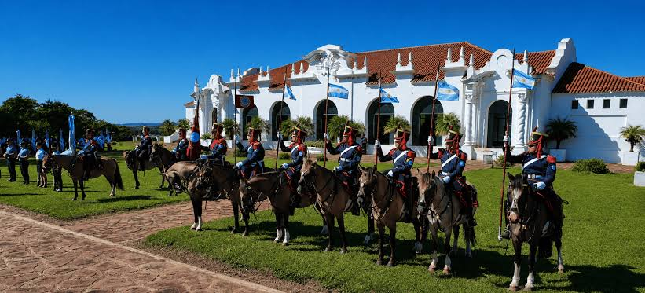
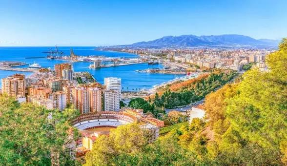
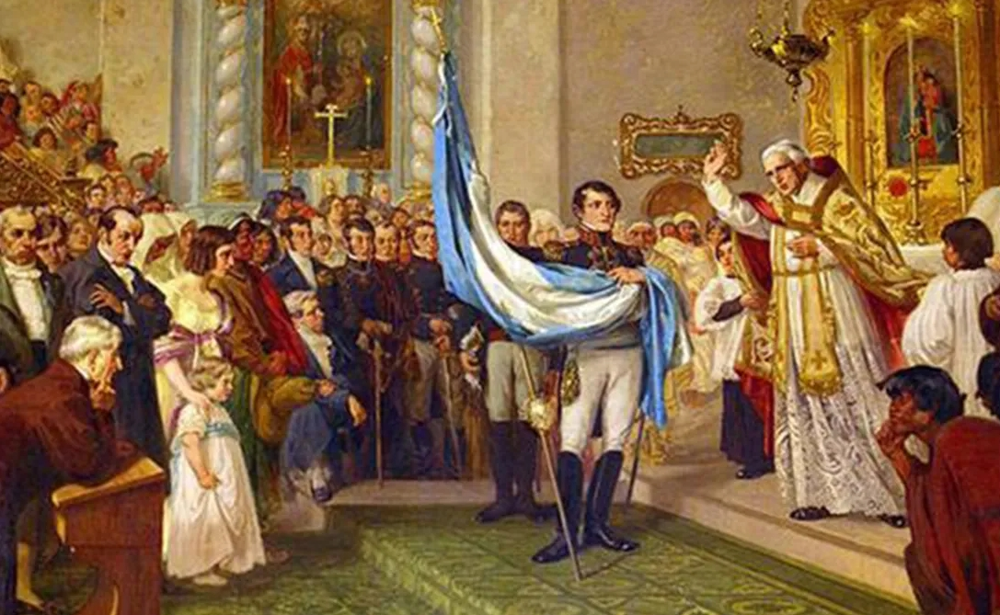
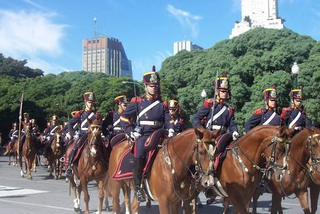
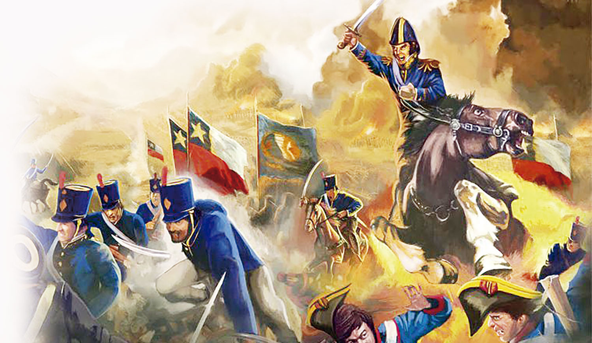
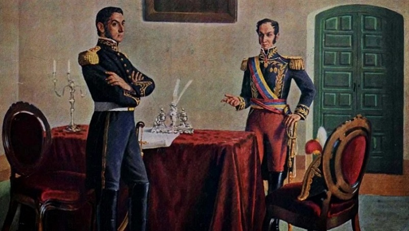
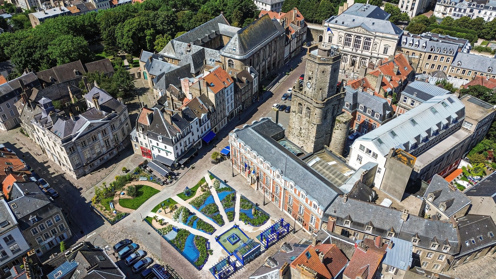

Curiosidades sobre José de San Martín
Nació en Yapeyú, actual provincia de Corrientes, el 25 de febrero de 1778.

Pasó gran parte de su juventud en España, donde comenzó su carrera militar.

En 1812 regresó al Río de la Plata y se incorporó a la lucha por la independencia.

Creó el Regimiento de Granaderos a Caballo.

El Cruce de los Andes comenzó en enero de 1817.
Participó en las campañas de liberación de Argentina, Chile y Perú.

Se reunió con Simón Bolívar en Guayaquil en 1822.

Murió en Boulogne-sur-Mer, Francia, el 17 de agosto de 1850.

¿Sabías que...?
José de San Martín también se preocupó por la educación. Consideraba que la enseñanza era fundamental para construir sociedades libres y capaces de tomar sus propias decisiones.
Línea de tiempo
1778
Nace en Yapeyú.
1812
Regresa al Río de la Plata.
1817
Realiza el Cruce de los Andes.
1821
Proclama la Independencia del Perú.
1850
Fallece en Francia.